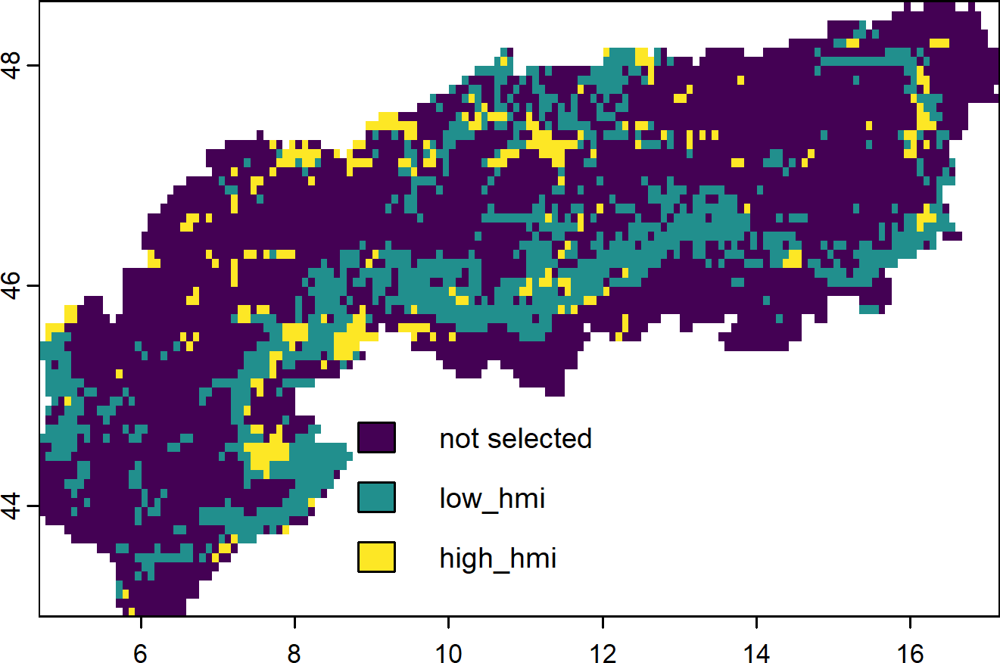
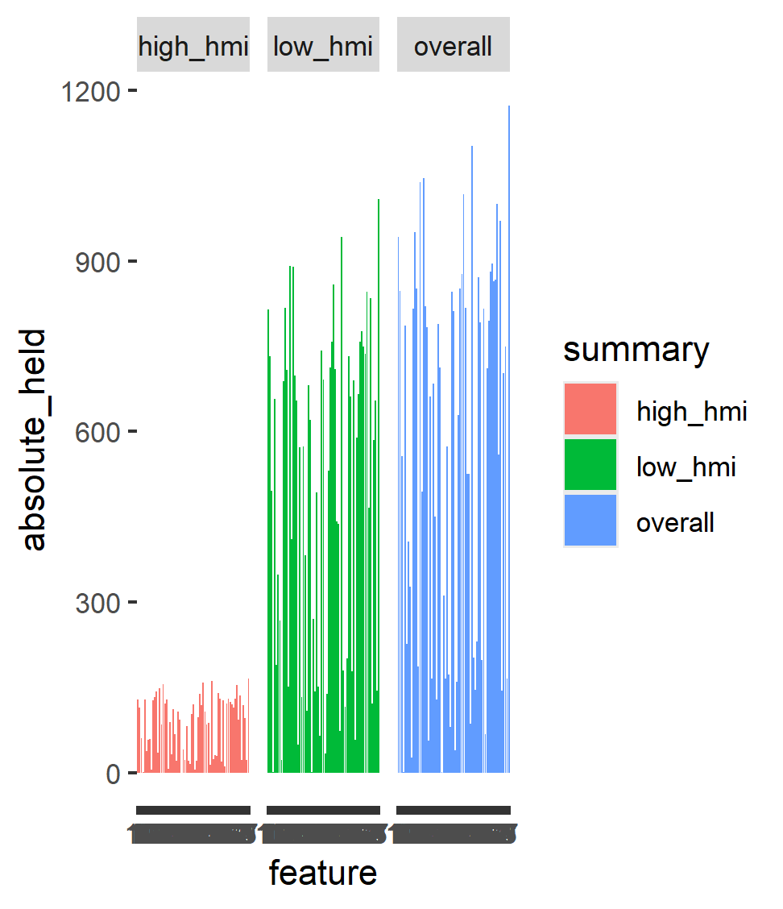
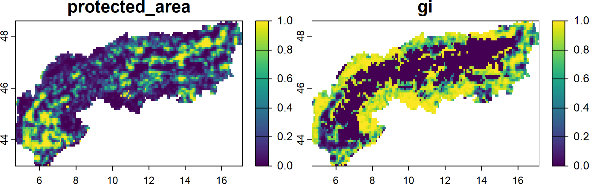
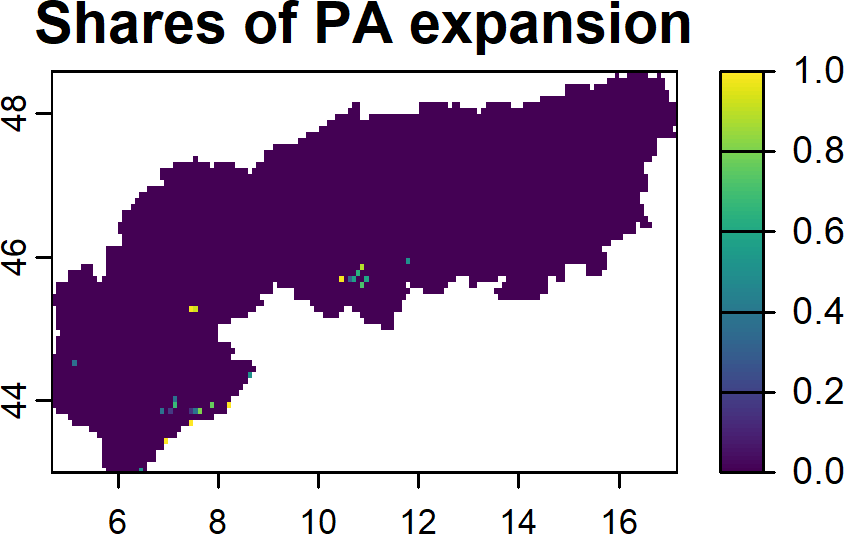

The technical prioritization in SCP with prioritizr is primarily about allocating area for a given objective to a range of planning units (PUs). Yet in many (if not most) situations there is a need to not only allocate land to a single but multiple outcomes. For example, when we aim to prioritize areas across realms (land and sea) both of which are affected by different costs, features and penalties. Similarly, land could be directly prioritized to certain land system classes (forests, croplands, wetlands) instead of all land, thus increasing interpretability as well as control over the outputs. The concept of having different allocations in the same problem formulation is commonly known as ‘zoning’ and has been popularized by Marxan (Watts et al. 2009).
The prioritizr website contains an excellent tutorial about how different (management) zones can be added to a planning problem, thus we will only cover the essentials here using the testing data that comes with the training course.
For demonstration purposes we focus on the Alpine region for these examples. You can obtain a shapefile of their outline here.
We consider a situation in which we have limited resources (financially or logistically) and would like to identify different priorities for areas with low or with high human modification. To do so we effectively separate our study region into low and high modified management zone.
Targets can be specified per zone individually, but in the solution each PU needs to be allocated to one of the zones or not be selected at all.
# Prepare the various layers we use herealps <- sf::st_read('extdata/boundary_alps/AlpineConvention.shp') |> sf::st_transform(crs = sf::st_crs(4326))hmi <-rast("extdata/gHM.tif") |> terra::crop(alps) |> terra::mask(alps)ndvi <-rast("extdata/ndvi.tif") |> terra::crop(alps) |> terra::mask(alps)pa <-rast("extdata/protectedareas.tif") |> terra::crop(alps) |> terra::mask(alps)PU <- PU |> terra::crop(alps) |> terra::mask(alps)spp <- spp |> terra::crop(alps) |> terra::mask(alps)# Budget total of 30% totallybarea <- terra::global(PU,"sum",na.rm=TRUE)[,1]*0.3# Respecify targets equal to the number of featurestr <-matrix(nrow = terra::nlyr(spp),ncol =2)tr[,1] <-0.3# Low use zone targettr[,2] <-0.1# High used zone targettr[c(10,20,30,40,50),2] <-0tr[c(1,2,3,4,5),1] <-1# create problemp <-problem(c(PU,PU),zones("low_hmi"= spp,"high_hmi"= spp*hmi) ) |>add_max_features_objective(budget = barea) |>add_relative_targets(targets = tr) |>add_binary_decisions() |>add_default_solver()s0 <-solve(p)s0p <-category_layer(s0) |>as.factor()levels(s0p) <-c("not selected", "low_hmi", "high_hmi")
1
Some features in the highly used zone might also not receive any benefit at all
2
While for others in the low-used zone we aim to conserve as much as possible (target= 100%)
3
The same PU layer is used. This could also be separated by zones with different costs.
4
Here we specify the feature (amount) contributing to each zone.
5
Note that for highly modified zone we reduce the amount of suitable habitat by the amount of modified land.
6
To display the multi-zone layer as a single categorical raster.

Selected features per zone
What do we achieve with each zone? Here we can calculate the representation by zone in terms of the absolute held amount (related also to the total or zone amount of area).
reps <-eval_feature_representation_summary(p, s0)# Apparently some species benefit more than others from co-benefits (distribution covered beyond the target)ggplot(reps,aes(x = feature, y= absolute_held, fill= summary)) +geom_bar(stat ="identity") +facet_wrap(~summary)

Relative amount held overall and per zone
9.1 Zoning for PA expansion and green infrastructure.
Finally, Let’s think of a another example where the aim is to expand the current protected area network, while conserving as much biodiversity and green infrastructure as possible. We again define 2 management zones, one for current protected areas and expansions thereof and one for the remaining land (green infrastructure).
# Make a manual bounded constraint data.frame to account for # fractional shares of current protected areasmcon <-data.frame(pu =c( terra::cells(PU), terra::cells(PU) ),zone =c(rep("protected_area", length(terra::cells(PU))),rep("gi", length(terra::cells(PU))) ), lower =0, upper =1)# Respecify the lower and upper amount of areamcon$lower[mcon$zone=="protected_area"] <- terra::values(pa, dataframe=T) |> tidyr::drop_na() |> dplyr::pull(layer)# Budget total of 30% totally for the PA zone, 100% for the restbarea <-c( terra::global(PU,"sum",na.rm=TRUE)[,1] * .3, terra::global(hmi,"sum",na.rm=T)[,1])# Respecify targetstr <-matrix(nrow = terra::nlyr(spp)+1, ncol =2)tr[,1] <-0.3# Protected area zone flat targettr[,2] <-1# Green infrastructure zone, everything goestr[nrow(tr),1] <-0# create problemp <-problem(c(PU,PU), zones( "protected_area"=c(spp,ndvi),"gi"=c(spp*hmi,ndvi) ) ) |>add_min_shortfall_objective(budget = barea) |>add_manual_bounded_constraints(data = mcon) |>add_relative_targets(targets = tr) |>add_proportion_decisions() |>add_default_solver()# Solves <-solve(p)plot(s)
1
Note the addition plus one here for the greenness layer.
2
This specifies a target of 0 for NDVI and the protected area zone, thus no benefits can be gained here
3
Note the addition of NDVI to the features. Also a simple discounting of modified land for the species features

Expanding protected areas to 30% and the remainder to Green infrastructure
This solutions expands from the currently protected land in the alps (29%) to (30%). Obviously not much but this also demonstrates that often the level of policy ambition - when focussing on area alone - can be relatively modest. Although in practice even small expansions can be quite challenging in implementation.

Subset of shares that increase from current protected areas
Note that a very similar and more elegant way can be to use linear constraints ( add_linear_constraints() ) applied per zone to limit the allocation of area per zone.
Watts, M.E., Ball, I.R., Stewart, R.S., Klein, C.J., Wilson, K., Steinback, C., Lourival, R., Kircher, L. & Possingham, H.P. (2009). Marxan with zones: Software for optimal conservation based land-and sea-use zoning. Environmental Modelling & Software, 24, 1513–1521.